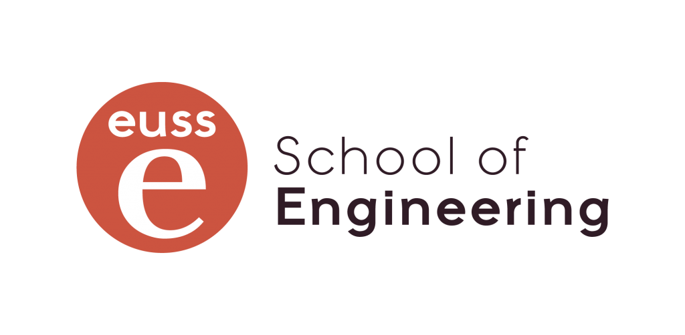

Perfil
Formado en controladores de robots industriales. Técnico en automatización y robótica industrial y estudiante de Ingeniería Electrónica Industrial y Automática, con experiencia en mantenimiento preventivo, puesta en marcha y modificación de sistemas automatizados.
Competencias Técnicas


Automatización y Control
PLC Omron
Siemens TIA Portal
B&R (básico)
OPC UA
Variadores de frecuencia
Robótica Industrial
Industrial Robot Controller
Mantenimiento preventivo
Puesta en marcha
Ajuste de maquinaria
Programación
C
Python
Arduino
RobotStudio
Microchip Studio
Diseño Industrial
AutoCAD
SolidWorks
SolidEdge
Experiencia Profesional
VOLPAK · Becario
Septiembre 2024 – Julio 2025- Programación de PLC Omron (CX‑Programmer, Sysmac Studio)
- Migración de entornos de desarrollo
- Implementación de comunicación industrial OPC UA
- Integración y parametrización de variadores
- Puesta en marcha y ajuste de maquinaria
DOMINION Infrastructure Industries (Amazon)
Mayo 2022 – Noviembre 2022- Mantenimiento preventivo de maquinaria industrial
- Supervisión del funcionamiento de robots
- Instalación y puesta en marcha de sistemas automatizados
- Sustitución de microprocesadores y componentes mecánicos
MEPA · Prácticas CFGS
Octubre 2017 – Mayo 2018- Montaje de maniobras eléctricas para ascensores
- Soldadura de placas electrónicas
- Cumplimiento estricto de procedimientos y normas
Formación Académica
Grado en Ingeniería Electrónica Industrial y Automática

EUSS‑UAB · 2019 – Actual
Técnico Superior en Automatización y Robótica Industrial
Bachillerato
Idiomas
Español · Nativo
Catalán · Nativo
Inglés · Nivel medio